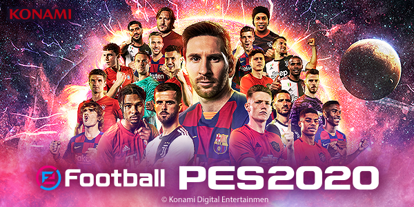
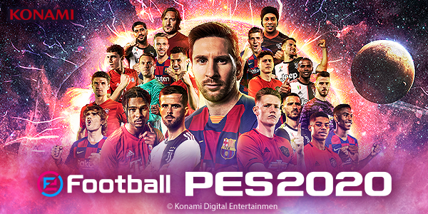

Sobre
eFootball Pro Evolution Soccer 2020 (popularmente conhecido pela sua abreviação eFootball PES2020, PES 2020 e eFootball Winning Eleven 2020 no Japão), é um jogo de futebol desenvolvido pela PES Production e publicado pela Konami. O jogo foi anunciado na E3 2019 em 11 de Junho de 2019[1] e ganhou o prêmio de Melhor Jogo de Esportes da E3 2019. A demonstração do jogo foi lançada no dia 30 de julho com 13 times (Arsenal, Barcelona, Manchester United, Bayern de Munique, Juventus, Palmeiras, Corinthians, São Paulo, Vasco, Flamengo, Boca Juniors, River Plate e Colo-Colo), com partidas online e offline e o modo editar com 6 ligas genéricas para serem editadas antes do lançamento do jogo. O jogo foi o 19° lançamento da série Pro Evolution Soccer, e lançado para PlayStation 4, Microsoft Windows via Steam e Xbox One no dia 10 de Setembro de 2019 (dois dias depois no Japão). É o primeiro com a mudança do nome da franquia com a adição de 'eFootball' no título, simbolizando um foco nos E-Sports, com os torneios da PESLeague e eFootball.Pro. É o retorno de Lionel Messi à capa do jogo, na versão padrão, desde sua aparição na capa de Pro Evolution Soccer 2011, Ronaldinho está na capa da edição lendária.
"Experiencie os estádios recriados com uma fidelidade extraordinária utilizando uma tecnologia de escaneamento 3D de alta performance. Testemunhe as reações espantosamente realistas dos espectadores aos acontecimentos do jogo. Observe a forma como os sistemas de iluminação dinâmica afetam o ângulo das sombras projetado no campo à medida que o tempo decorre durante o jogo. Vê cada passada, avanço, passe e chute a ser animado continuamente à medida que os jogadores percorrem o relvado brilhantemente reproduzido. Uma interface do utilizador completamente renovada à medida que navegas intuitivamente em menus concebidos tendo em conta a facilidade de utilização." Motor de iluminação melhorado: "Quer jogues sob o sol quente do meio-dia ou sob o brilho intenso dos holofotes à noite, as condições de iluminação do PES nunca antes pareceram tão vibrantes. As amplas melhorias efetuadas no motor de iluminação asseguram um maior nível de imersão uma vez que o estádio, as bancadas e os jogadores são apresentados sob luz natural e artificial."
Deseja comprar? Escolha uma das 3 lojas abaixos
Imagens
 
